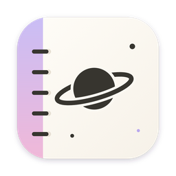

우주 노트 (Universe Note)개인정보처리방침
시행일: 2026년 10월 28일 (iPhone 앱 내용 추가)
우주 노트(Universe Note, 이하 '앱')는 개인이 개발한 Mac·iPhone용 노트 앱이에요. 이 방침은 Mac 앱과 iPhone 앱에 똑같이 적용돼요. 앱은 회원 가입이 없고, 사용자의 노트와 일정 내용을 개발자에게 보내지 않아요.
1. 노트와 첨부 파일
노트와 첨부 파일은 사용자의 Mac·iPhone에 저장돼요. iCloud 동기화를 켜면 사용자 본인의 iCloud 개인 저장소(Apple CloudKit)에도 저장돼요. 이 저장소는 사용자 본인만 접근할 수 있고, 개발자는 내용을 볼 수 없어요. 자동 백업 파일은 사용자의 iCloud Drive(또는 Mac)에 저장돼요.
2. 캘린더와 미리 알림
사용자가 허용하면 기기에 연결된 캘린더와 미리 알림을 앱에서 보여 주고 고쳐요. 이 내용은 기기의 캘린더 시스템 안에서만 다루고, 개발자에게 보내지 않아요.
3. 익명 사용 통계 (끌 수 있음)
앱을 더 좋게 만들기 위해 하루 한 번 다음 정보를 보내요.
- 앱이 무작위로 만든 설치 번호 (누구인지 알 수 없음)
- 앱 버전, 운영체제 버전(macOS·iOS), 칩 종류(Mac: 애플 실리콘·인텔), 앱 종류(Mac 앱스토어판·설치 파일판·iPhone 앱)
- 켜 둔 기능: 캘린더·미리 알림 연결, iCloud 동기화, 자동 백업(Mac), 암호·잠금 사용 여부 (켬/끔만)
- 프로필·노트 수의 대략적인 구간 (예: 10~99개. 정확한 수는 보내지 않음)
- 오류 종류별 횟수 (예: 동기화 오류 2번, 앱이 멈춘 횟수. 오류 내용은 보내지 않음)
이름, 이메일, 노트·일정의 내용과 제목, 위치는 보내지 않고, 받는 서버는 IP 주소를 저장하지 않아요. 앱의 설정 → 개인정보에서 언제든 끌 수 있어요. iPhone 앱은 처음 실행할 때 이 내용을 안내하고, '보내지 않기'를 고를 수 있어요.
4. 의견 보내기
사용자가 직접 '개발자에게 의견 보내기'를 쓰면 적은 내용과 (선택한 경우) 앱 버전·macOS 버전·칩 종류, 그리고 답장받을 이메일(선택)을 보내요. 이메일은 답장할 때만 써요.
5. 정보 보관과 삭제
익명 통계와 의견은 Cloudflare 서버에 보관해요. 삭제를 원하면 아래 연락처로 요청해 주세요. 노트와 백업은 사용자의 기기와 iCloud에 있으므로 사용자가 직접 지울 수 있어요.
6. 제3자 제공
수집한 정보를 광고, 추적, 판매 목적으로 쓰거나 제3자에게 제공하지 않아요. 앱에는 광고나 제3자 분석 도구가 들어 있지 않아요.